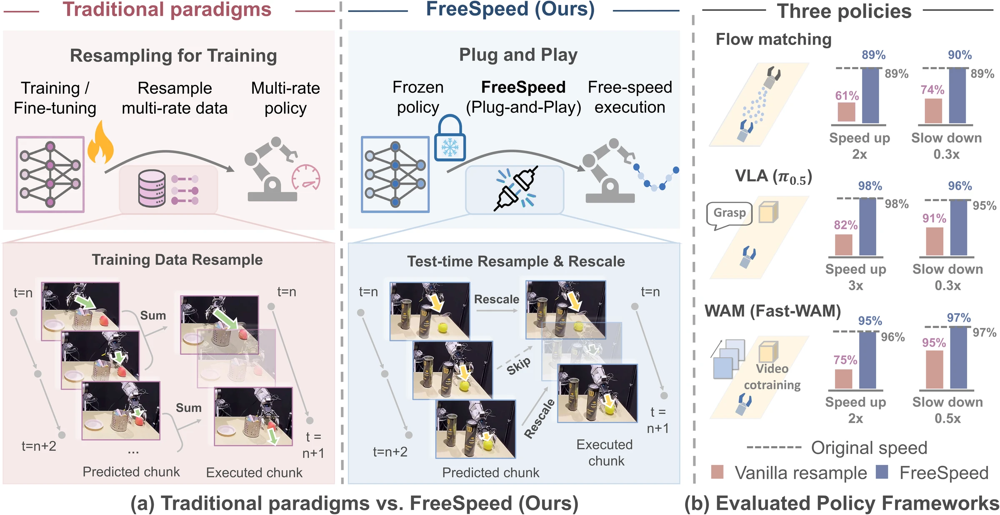
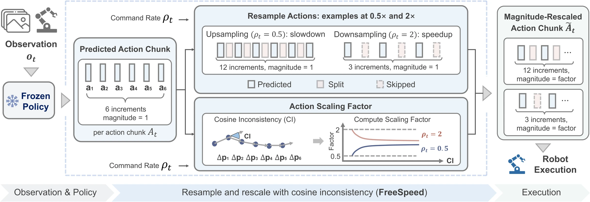
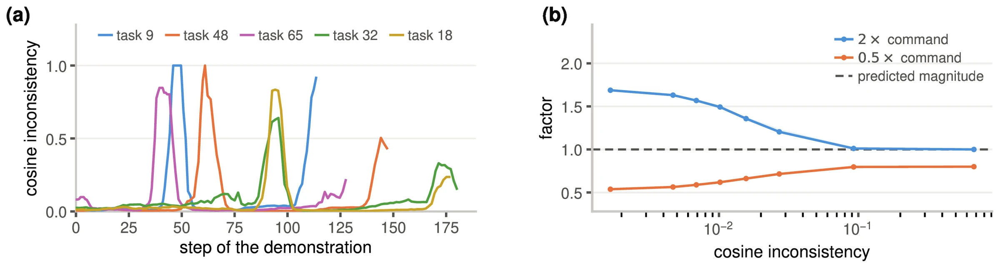
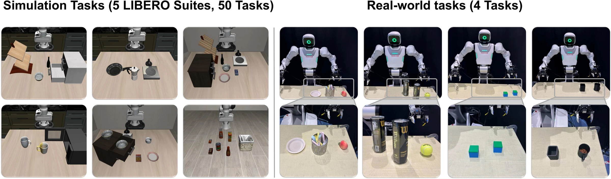
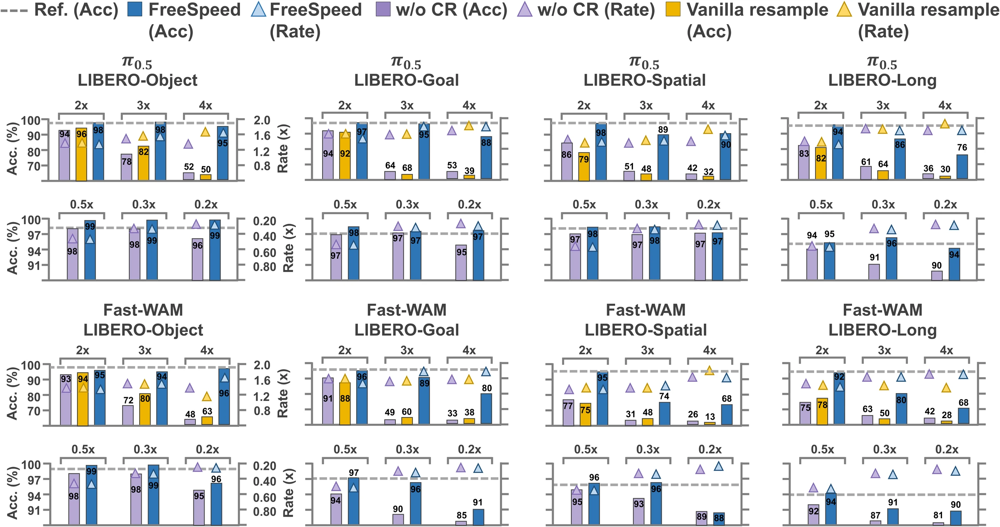
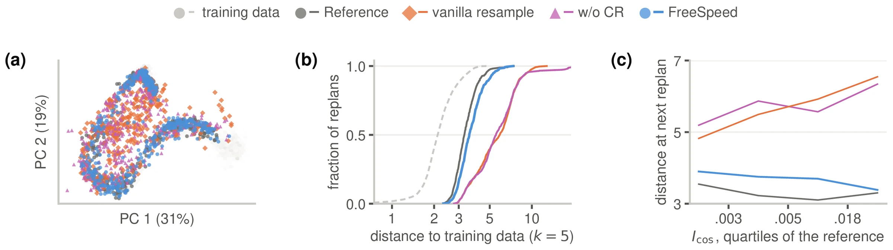
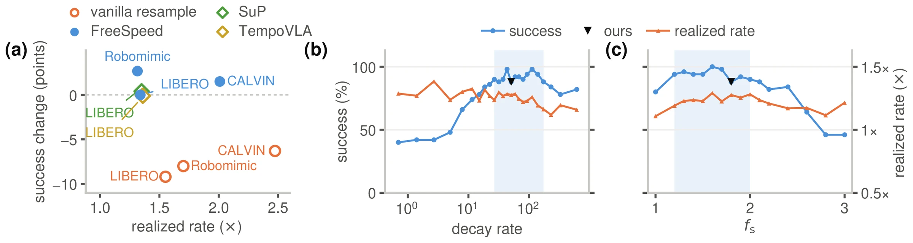

Overview
Online control of execution speed is essential for deploying robot policies in real-world scenarios, as robots may need to speed up under time constraints or slow down to facilitate human interaction and improve safety. However, imitation-learned policies inherit the execution speed of their demonstrations, and test-time speed modification can introduce unrecoverable out-of-distribution observations, reducing task success. We introduce FreeSpeed, a training-free module that post-processes action chunks from pretrained policies. FreeSpeed resamples each predicted chunk at the requested rate, then uses directional inconsistency between adjacent actions as the primary signal for rescaling. This signal adaptively determines how closely the execution speed can approach the requested speed, allowing flexible speed adjustment within the evaluated limits without compromising task success. Across three policy families and 50 simulated tasks, FreeSpeed supports online speed changes, with realized execution rates spanning 0.22× to 2.53× among settings that preserve per-task success. Across four real-world manipulation tasks, FreeSpeed achieves an average success rate of 94.0%, matching the frozen policy's 93.8%, while realizing execution rates from 0.38× to 1.97×.
Speed-control capabilities of the compared methods
| Method | No rate training | Unmodified demos | Unchanged controller | User-set rate | Slow-motion | In-episode rate |
|---|---|---|---|---|---|---|
| SuP | ○ | ○ | ○ | ○ | ○ | ○ |
| SpeedTuning | ○ | ● | ● | ○ | ○ | ○ |
| TempoVLA | ○ | ○ | ● | ● | ● | ● |
| SAIL | ○ | ○ | ○ | ○ | ○ | ○ |
| RACE | ● | ○ | ○ | ○ | ○ | ○ |
| DemoSpeedup | ○ | ○ | ○ | ○ | ○ | ○ |
| AutoSpeed | ○ | ● | ○ | ○ | ● | ○ |
| SpeedAug | ○ | ○ | ● | ○ | ○ | ○ |
| FreeSpeed (ours) | ● | ● | ● | ● | ● | ● |
A filled dot indicates that the capability is demonstrated in the corresponding paper; an open dot indicates that it is not demonstrated.
Method

1Resample
At each replan, FreeSpeed resamples the predicted chunk of incremental (delta) actions on a temporal grid with stride ρt. Acceleration skips predicted actions, while deceleration splits each action into sub-actions that preserve its direction.
2Measure inconsistency
Cosine inconsistency measures the change in direction between consecutive translation increments. The inconsistency of a chunk, Icos, is the maximum over its H−1 adjacent increment pairs.
3Rescale
The factor scales translation and rotation increments; gripper commands are unchanged. It equals fs when Icos is zero and approaches fc as Icos increases.
Cosine inconsistency tracks the task phase
Segments with high Icos correspond to decisive task phases, identified in these examples as grasping and placement in pick-and-place tasks. Under acceleration, the factor is large when the chunk follows a straight trajectory and decreases toward 1.0 as CI increases. Under deceleration, the factor is close to the commanded stride when CI is small and increases as CI grows. In both cases, increasing CI brings the executed step lengths closer to those originally predicted by the policy.

Experiments

Policies and tasks
We evaluate three policy architectures: VLA, WAM, and task-specific flow matching. Checkpoints of π0.5 and Fast-WAM were pretrained on 40 tasks spanning LIBERO-Spatial, Object, Goal, and Long and are kept frozen. Task-specific flow-matching policies are trained on 10 LIBERO-90 tasks and 4 real-robot tasks. On the real robot, a Rokae Helios series humanoid executes the action at 30 Hz.
Compared execution rules
Vanilla resampling sums the skipped action increments into the retained action. w/o CR combines resampling with naive rescaling by the commanded stride, ft = ρt, as an ablation without CI-based rescaling. The unchanged 1× policy is the reference. Under deceleration, vanilla resampling and w/o CR are equivalent, so only w/o CR is reported.
π0.5 and Fast-WAM on four LIBERO suites
At a 2× command, FreeSpeed maintains the reference success rates for both policies, whereas vanilla resampling reduces success by 9.2 and 12.7 percentage points and w/o CR by 8.0 and 12.3 percentage points, respectively. Under deceleration, FreeSpeed outperforms w/o CR at every slowdown stride on both policies. Across individual tasks from both policies, the realized rates that preserve each task's own 1× success rate range from 0.22× to 2.53×.

Flow Matching on 10 LIBERO-90 tasks
Across the four non-reference strides, FreeSpeed maintains or exceeds the 1× reference's mean success rate of 89%, with realized rates from 0.348× to 1.431× across individual tasks.
| Success (%) | Rate (×) | |||||
|---|---|---|---|---|---|---|
| Cmd | w/o CR | Vanilla | Ours | w/o CR | Vanilla | Ours |
| 1× ref. | 89 | 1.000 | ||||
| 1.5× | 73 | 80 | 90 | 1.242 | 1.280 | 1.221 |
| 2× | 46 | 61 | 89 | 1.435 | 1.483 | 1.353 |
| 0.5× | 84 | — | 90 | 0.570 | — | 0.626 |
| 0.3× | 74 | — | 90 | 0.328 | — | 0.402 |
Mean over 10 tasks, 50 rollouts per task. Rate averages per-task realized rates, each computed over trials in which both the evaluated method and the reference succeed.
Four real-robot tasks
Averaged over the six non-reference strides, FreeSpeed achieves 94.0% mean success, compared with the reference's 93.8%, with realized execution rates from 0.38× to 1.97× across individual tasks.
| Success (%) | Rate (×) | |||||
|---|---|---|---|---|---|---|
| Cmd | w/o CR | Vanilla | Ours | w/o CR | Vanilla | Ours |
| 1× ref. | 93.8 | 1.00 | ||||
| 2× | 72.5 | 77.5 | 97.5 | 1.66 | 1.69 | 1.44 |
| 3× | 37.5 | 38.8 | 95.0 | 1.86 | 1.93 | 1.62 |
| 4× | 25.0 | 11.2 | 91.2 | 1.93 | 2.18 | 1.75 |
| 0.5× | 82.5 | — | 96.2 | 0.57 | — | 0.68 |
| 0.3× | 66.2 | — | 93.8 | 0.37 | — | 0.47 |
| 0.2× | 55.0 | — | 90.0 | 0.25 | — | 0.40 |
Mean over Peach on Plate, Tennis in Can, Stack Cube, and Pour Almond.
Rate that varies during execution
FreeSpeed maintains task success under stride randomization across policy inferences and factor randomization within its bounds. (A) A new stride is sampled from the full command set at each replan. (B) The stride remains fixed, while the rescaling factor is sampled between fc and ft; success rates remain within 2 percentage points of the fixed-stride rule.
| A: the stride varies | |||
|---|---|---|---|
| Policy | Ref. succ. | Succ. | Rate |
| Flow Matching | 88 | 90 | 0.63 |
| π0.5 | 97 | 97 | 0.54 |
| B: the factor varies · success (%) / rate (×) | |||||
|---|---|---|---|---|---|
| Policy | Factor | 0.3× | 0.5× | 1.5× | 2× |
| FM | fixed | 90 / 0.40 | 90 / 0.63 | 90 / 1.22 | 89 / 1.35 |
| varying | 89 / 0.46 | 91 / 0.68 | 92 / 1.20 | 91 / 1.28 | |
| π0.5 | fixed | 97 / 0.39 | 98 / 0.57 | 97 / 1.21 | 97 / 1.34 |
| varying | 97 / 0.42 | 98 / 0.61 | 96 / 1.13 | 97 / 1.21 | |
FM is evaluated on the 10 LIBERO-90 tasks, and π0.5 on all 40 LIBERO tasks.
Real-robot rollouts
Select a task and a commanded rate to compare the 1× reference, w/o CR, vanilla resampling, and FreeSpeed side by side. Select Variable to see the rate change within an episode.
Analysis
FreeSpeed keeps the policy in distribution
On LIBERO-90 Task 60 with Flow Matching at 2×, FreeSpeed remains close to the 1× reference and training data, with a median distance of 1.09 times the reference median, compared with 1.79 for vanilla resampling and 1.68 for w/o CR. Under the two baselines, higher inconsistency is associated with larger subsequent distances, whereas FreeSpeed stays close to the reference across the inconsistency range.

Prior methods and the two constants

On LIBERO, FreeSpeed matches SuP and TempoVLA in success-rate change and realized rate while providing a training-free, plug-and-play solution. Vanilla resampling can achieve higher realized rates, but at the cost of a substantial reduction in success rate. Changes are reported rather than absolute success rates because evaluation settings differ.
The decay rate λ and the factor fs are varied in turn at the 2× command, with 50 rollouts per setting, showing a broad range of effective settings for both. Shading indicates settings whose success rates remain within ten percentage points of the best observed result.
FreeSpeed enables test-time execution-speed control for frozen action-chunking policies. It computes cosine inconsistency between adjacent actions within each predicted chunk and uses this signal to adapt rescaling under fixed or time-varying commands. The main limitation of FreeSpeed is that its acceleration ceiling is set by how much free motion a task contains.
BibTeX
@misc{hu2026freespeed,
title = {FreeSpeed: Training-Free Speed Control
for Generative Policies},
author = {Hu, Yuxuan and Shan, Shilin and Wang, Qiheng and Yang, Jinghan
and Fan, Junqiao and Wan, Hao and Yang, Jianfei},
year = {2026}
}